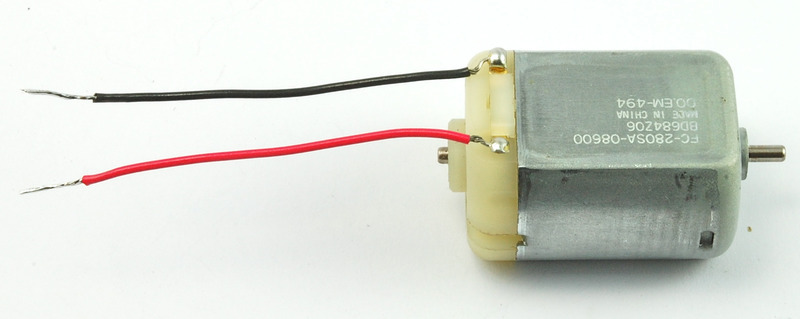
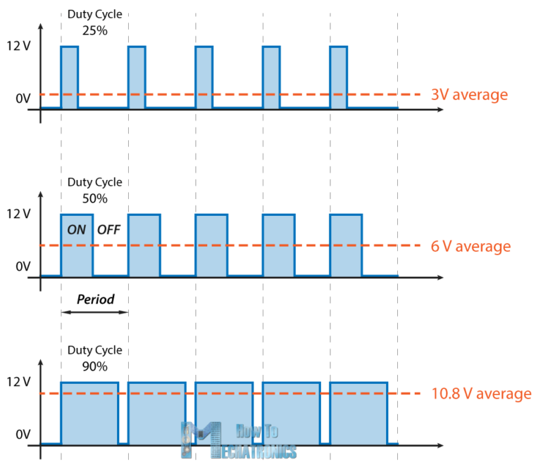
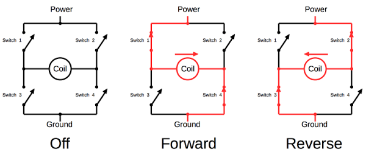
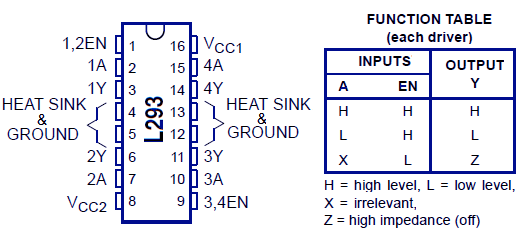
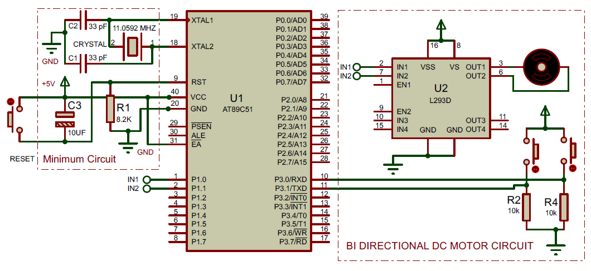

Introduction:
A DC motor (Direct Current motor) is the most common type of motor.
Interfacing DC Motor to a microcontroller forms an essential
part in designing embedded robotic projects.
This article shows how to interface a small DC motor with any
microcontroller. Before working with DC motors we will take a
look at some basic techniques for controlling them. There are
several types of DC motors, but here we will use a simple brushed DC motor.
Hardware Discussion : DC Motor

Fig: DC Motor
DC motors normally have just two leads, one positive and one
negative. If you connect these two leads directly to a battery,
the motor will rotate. If you switch the leads, the motor will
rotate in the opposite direction.
Driving electromotors needs a high current. In addition,
spinning direction and speed are two important parameters to be controlled.
These requirements can be handled by using a microcontroller or similar. But
there is a problem; Microcontrollers cannot provide enough
current to run the motor and if you connect the motor to the
microcontroller directly, you may damage the microcontroller.
The perfect solution is to use a motor driver circuit in
between the microcontroller and the DC motor.
DC Motor Features:
- Runs on DC power or AC line voltage with a rectifier.
- No need for a drive circuit when running at constant speed.
- Able to operate at high speeds (1,000 to 5,000 rpm.)
- High-efficiency design (60-75\% Approx).
- High starting torque.
- Responsive and easy to use as speed and torque can be controlled by voltage.
- Can be divided into brushed and brushless DC motors.
Controlling a DC Motor:
In order to have a complete control over DC motor, we have
to control its speed and rotation direction. The DC motor
speed can be controlled by applying varying DC voltage;
whereas the direction of rotation of the motor can be
changed by reversing the direction of current through it.
This can be achieved by combining these two common
techniques.
PWM (Pulse Width Modulation) –
For controlling speed
It is a technique where average value of the input
voltage is adjusted by sending a series of ON-OFF
pulses.
The average voltage is proportional to the width
of the pulses known as Duty Cycle. The higher the
duty cycle, the greater the average voltage being
applied to the dc motor(High Speed) and the lower
the duty cycle, the less the average voltage being
applied to the dc motor(Low Speed).

H-Bridge –
For controlling rotation direction
An H bridge is an electronic circuit which allows
the voltage to be flown in either direction.
H-bridges are used in many different applications,
one of the most common being to control motors in
robots. It is called an H-bridge because it uses
four transistors connected in such a way that the
schematic diagram looks like an "H."
Closing two particular switches at the same time reverses
the polarity of the voltage applied to the motor.
This causes change in spinning direction of the motor.

You can use discrete transistors to make this circuit, but for
this tutorial, we will be using the L293D H-Bridge IC. The L293D
can control the speed and direction of DC motors and stepper
motors and can control two motors simultaneously. Its current
rating is 1.2A for each motor. At these currents, however, you
will need to use heat sinks.
Motor Driver L293D

L293D Features:
- Can be used to run Two DC motors with the same IC.
- Wide Supply-Voltage Range: 4.5 V to 36 V.
- Separate Input-Logic Supply.
- Internal ESD Protection.
- High-Noise-Immunity Inputs.
- Constant Current 600 mA.
- Peak Output Current 1.2 A Per Channel.
- Output Clamp Diodes for Inductive Transient. Suppression (L293D)
- Automatic Thermal shutdown is available.
- Available in 16-pin DIP, TSSOP, SOIC packages.
Circuit Diagram :

Fig: DC Motor control circuit using L293D and 8051 Microcontroller.
Circuit Discussion :
The circuit shown below is of an 8051 based bi directional motor
whose direction can be controlled using 2 push button
switches. The circuit is very similar to the previous one
except for the two push button switches . These pushbutton
switches are interfaced to P0rt 3 of the microcontroller.
Resistors R2 and R3 are the pull down resistors for P3.0
and 3.1 respectively.
The circuit shown below is of an 8051 based bi directional motor
whose direction can be controlled using 2 push button
switches. The circuit is very similar to the previous one
except for the two push button switches . These pushbutton
switches are interfaced to P0rt 3 of the microcontroller.
Resistors R2 and R3 are the pull down resistors for P3.0
and 3.1 respectively.
Assembly Program : dc_motor_8051.asm
Code Discussion :
jump if not equal instruction. In simple words the CJNE
instruction compares two operands and jump to a predefined
LABEL if the operands are not equal. If the two operands
are equal nothing happens and the next instruction is
executed. Whenever push button S2 is pressed the status
of P3 will be 00000001B .This status is moved to accumulator
A and compared with 00000001B using the CJNE instruction.
Both operands are equal means S2 is pressed and the next
instruction (MOV P1,\#00000001B) which makes the motor run
clockwise is executed. If the operands are not equal that
means the S2 is not pressed and the controller jumps to
LABEL1 which is to check the S3. To check S3, status of
P3 is moved to A again and it is compared with 00000010B
using the CJNE instruction. Both operands are equal means
the S3 is pressed and the next
instruction (MOV P1,\#00000010B) which makes the motor
run anti clockwise is executed. Both operands are not
equal means S3 is not pressed and the controller goes
to check S2 again and this cycle is repeated.
|